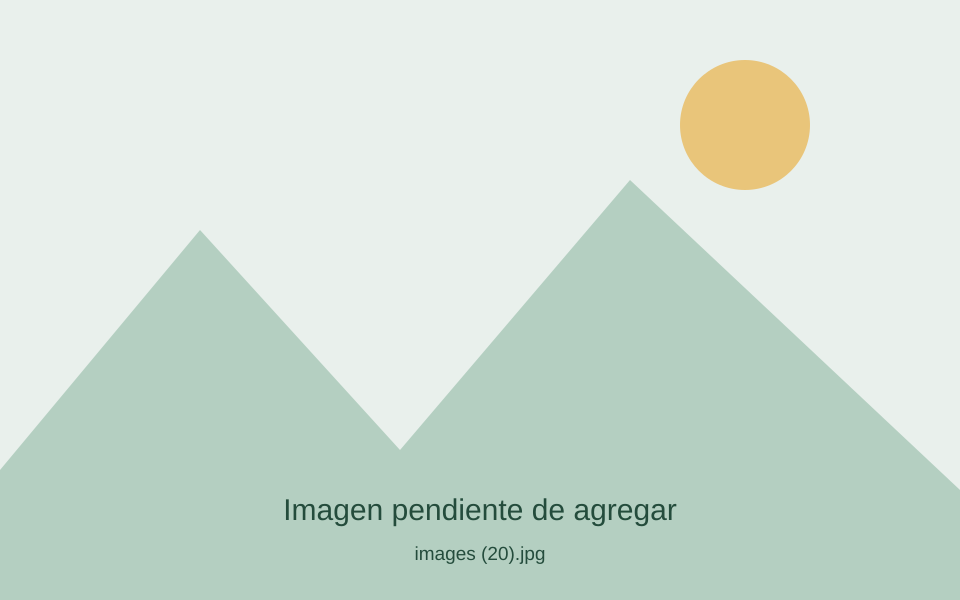

Plaza de Armas
Centro histórico de Moquegua.

Centro histórico de Moquegua.

Hermoso atractivo natural de Moquegua.

Importante sitio arqueológico.
Valle con paisajes naturales y agricultura.
Hermosa vista del océano Pacífico.

Una de las playas más conocidas de Ilo.